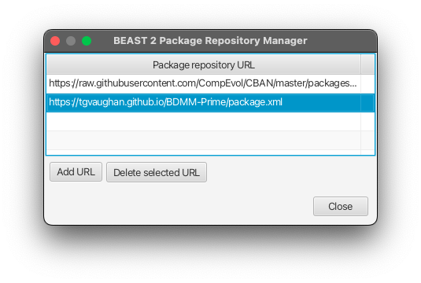
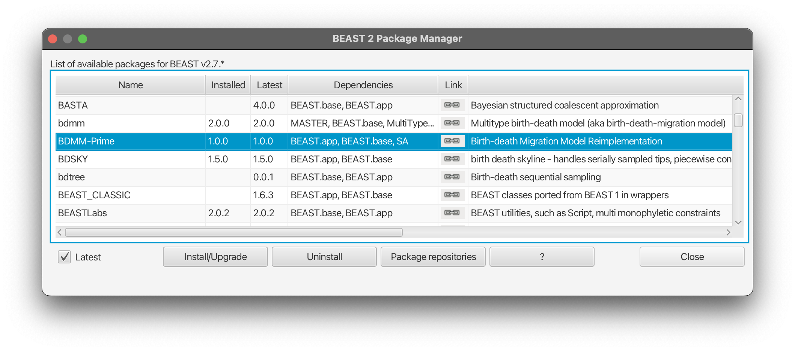
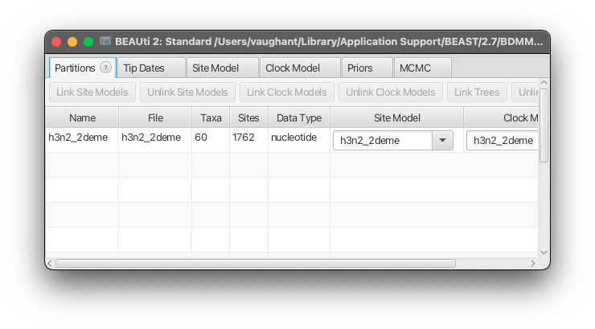

Source code: https://github.com/tgvaughan/BDMM-Prime
1. Introduction
BDMM-Prime is a BEAST 2 package for performing phylodynamic inference under a variety of linear birth-death-sampling models with/without types.
1.1. Comparison with BDMM
The BDMM-Prime project is a hard fork of the original BDMM project. The intention is to extend the functionality of the original package, while improving its flexibility and ease of use. It incorporates the following enhancements:
- an improved BEAUti interface that allows a much more diverse range of analyses to be configured,
- automatic fall-back to analytical solutions for unstructured (single type) analyses, meaning BDMM-Prime can in principle be used in place of BDSKY,
- use of stochastic mapping for efficient sampling ancestral states,
- a particle filtering algorithm allowing joint sampling of population trajectories,
- a heavily refactored code base intended to make the package easier to use, extend and maintain.
As a result of the many changes that were required in making this transition, BDMM-Prime is completely incompatible with BDMM itself. Thus the original package will be maintained separately to ensure that BEAST 2 XMLs and packages that depend on it remain usable.
1.2. Acknowledgements and Citations
As this is a fork of BDMM, BDMM-Prime owes a huge debt to the authors and contributors of that project, in particular Denise Kühnert and Jérémie Scire.
If you use this package as part of your research, please cite these papers:
- Vaughan and Stadler, Bayesian phylodynamic inference of multi-type population trajectories using genomic data, doi:10.1101/2024.11.26.625381 (preprint)
- Scire et al., Robust Phylodynamic Analysis of Genetic Sequencing Data from Structured Populations, Viruses, 14:8, 1648 (2022), https://doi.org/10.3390/v14081648
- Kühnert et al., Phylodynamics with Migration: A ComputationalFramework to Quantify Population Structure from Genomic Data, MBE, 33:8, 2102-2116 (2016), https://doi.org/10.1093/molbev/msw064.
2. Getting Started
2.1. Installation
BDMM-Prime requires a working installation of BEAST 2.7 which can be obtained from https://www.beast2.org/. The package itself can then be installed via the built-in package manager in the following way:
- Open BEAUti.
- From the
Filemenu selectManage Packages. - Click the
Package repositoriesbutton at the bottom of the dialog box. - Click
Add URLand enter the following repository URL:
https://tgvaughan.github.io/BDMM-Prime/package.xml.
The list of repositories should now look like this:  - Close the repository manager.
- The latest version of BDMM-Prime should now appear in the list of packages:

Select it, then click the
Install/Upgradebutton. - Close the package manager.
BDMM-Prime should now be available to use on your system. (You will need to restart BEAUti before you can set up any analyses.)
2.2. Setting up your first analysis
Here we will step through the process of setting up, running and interpreting a simple BDMM-Prime analysis. For the purpose of demonstration, we will focus on applying a multi-type model to simple two-type epidemiological data set, but the same general approach can be taken to set up single-type analyses of other data sets too.
BDMM-Prime analyses can be set up in BEAUti in much the same way that analyses under using other BEAST 2 models such as BDSKY or the Bayesian Skyline Plot can be set up. The only part unique to BDMM-Prime is "tree prior" configuration. Nonetheless, below we describe the complete process of setting up a small BDMM-Prime analysis.
The following should be read like a short tutorial. Steps to perform on your computer are highlighted like this:
Start BEAUti.
Note: the following assumes some limited familiarity with BEAST 2. If you've never used this software before, please consider working through the Introduction to BEAST 2 tutorial.
2.2.1. Loading sequence data into BEAUti
For this tutorial, we'll be using the example influenza data which is installed along with BDMM-Prime. This data, assembled from publicly-available data downloaded from NCBI GenBank, is the same set used in this MultiTypeTree tutorial. It consists of an aligned set of 60 H3N2 HA sequences sampled from New Zealand and Hong Kong. To make finding this data easy, we first select the package working directory.
Select "Set working dir" from the File menu, then choose "BDMM-Prime" from the sub-menu.
To load the data, simply choose "Import alignment" from the File menu and select one or more FASTA files.
Select "Import alignment" from the File menu to display a file selection dialog box. Using this, open the
examplessubdirectory and select the fileh3n2_2deme.fna.
The BEAUti window should now look something like the following: 
2.2.2. Setting up tip dates
The sequences in this data set are sampled at different times, so use the following instructions to import this information into the analysis. (This step is unnecessary if sequences were collected at the same time, or near enough given the anticipated scale of the tree.)
Select the Tip Dates panel and check the "Use tip dates" option. Then press the "Auto-configure" button to set the times based on values extracted from the sequence headers. Finally, use the radio button and dropdown menu to interpret everything after the last "
_" character as a numerical tip time.
2.2.3. Setting the site model
For this example, we will use the basic HKY substitution model, with equilibrium nucleotide frequencies fixed to the empirical frequencies of characters in our alignment.
Select the "Site model" panel. Select the HKY model with "empirical" nucleotide frequencies.
This choice to fix the equilibrium frequencies is made here only to reduce the computational complexity of the tutorial analysis. For production analyses, these should probably be estimated, and Gamma-distributed site-to-site rate heterogeneity should also be used.
2.2.4. Setting the clock model
Since we have serially-sampled data, our analysis requires some kind of molecular clock. For the sake of simplicity, we use a strict clock, setting the initial value of the clock rate to $5\times 10^{-3}$ substitutions per site per year, which is close to the true value for influenza.
Select the "Clock model" panel. Set the "mean clock rate" value to 0.005.
2.2.5. Selecting the tree prior
The tree prior (also known as the phylodynamic likelihood) is the component of the analysis which BDMM-Prime provides. Here we configure the particular birth-death model we will use to relate the tree to the various population-level parameters we'd like to learn about.
Select the "Priors" panel. To choose the BDMM-Prime tree prior, find the drop-down menu next to
Tree.t:h3n2_2demeand select "BDMMPrime".
2.2.6. Setting up the sample types
The next thing we want to do is to specify the locations associated with each of the samples included in our analysis.
Scroll down to end of the tree prior section and find the table associating tree leaves with locations. Notice that the sample names have the form
ID_Location_Date. To extract the locations from the sample names, click theAuto-configurebutton, selectsplit on character, ensure "_" is specified as the delimiter, and select "2" from thetake group(s)drop-down menu. Once this is complete, press "Ok".
The table should now be populated with types extracted from the sample names.
2.2.7. Configuring the multi-type model
Now we get to the main part of the analysis setup, where we decide exactly how to model the generation of our data. In our case, we want to model a small part of the global transmission dynamics of H3N2.
The first thing to do is to is to select our desired parameterization of the birth-death model. In our case, as we're analysing pathogen sequences in an attempt to reconstruct transmission dynamics, we'll use the epidemiological parameterization.
Expand the tree prior section by clicking the arrow next to
Tree.t:h3n2on the left-hand side of of the screen. Then select "Epi Parameterization" from the drop-down menu at the top of the expanded section.
With this done, the next task is to define the dimensionality and initial values of the multi-type birth-death parameters. In BDMM-Prime, each of these parameters is considered a "skyline parameter" which can change in a piecewise-constant fashion through time.
The first skyline parameter to consider is the Re parameter, representing the effective reproductive number. By default parameter values are assumed to be the same across all types,
For the Re skyline parameter, uncheck the "Scalar values" check box to allow this parameter to take type-dependent values.
The next parameter is the "become uninfectious rate" parameter, representing the rate at which infected individuals become uninfectious. As this parameter is predominantly a function of the pathogen rather than location, we will assume it takes a single value which is shared among types. Furthermore, as influenza infections often take a relatively short time to pass, we will initialise this value to correspond to an infectious period of 1 week.
Find the Become Uninfectious Rate parameter, double-click the starting value and change it to 52 (per year). Be sure to press "Enter" to cause BEAUti to accept the new value.
Now let's consider the Sampling Proportion parameter. This parameter requires special care, as the sampling assumptions of the model can dramatically influence inference results. In our case we want (a) to allow for type-dependent sampling proportions and (b) to fix the sampling proportion to zero for all times earlier than the first sample.
In BDMM-Prime, this configuration is reasonably simple to configure.
Find the Sampling Proportion parameter, then follow these steps:
- Uncheck the "Scalar value" checkbox to allow for type-dependent values.
- Check "Display visualization" to see the distribution of sample times relative to the most recent sample.
- Set the "Number of change times" value to 1. (Notice the appearance of the epoch boundary marker on the visualisation.)
- Set the change time for the boundary between epoch 1 and 2 to 5.7. (Notice that this value ensures the oldest sample remains in epoch 1.)
- In the "Values" table, double-click the entries corresponding to the sampling proportion values for Epoch 2 and change each to 0.0, remembering to press "enter" after each change.
Note skyline parameter values of 0 are always fixed in the analysis, regardless of whether or not the "estimate values" option is checked.
Finally, we need to define how lineages change type in our multi-type model. Like BDMM, BDMM-Prime allows both direct "migration" as well as "birth to a new type" styles of multi-type models. Given we are modelling the movement of infected influenza hosts, migration suits our situation best. We also acknowledge that migration rates between different pairs of types/locations may be different from one another.
To incorporate these decisions, follow these instructions:
Find the Migration Rate parameter, then:
- Double-click on the value and change it from it's default to the smaller rate of 0.1 (any infected individual has a 10% chance of moving between the two locations in any given year).
- Uncheck the "Scalar values" checkbox to allow rates to vary between pairs of locations.
- Check the "Estimate values" checkbox to ensure these migration rates are estimated.
2.2.8. Setting the remaining parameter priors
With the multi-type model is configured, what remains is to define priors for each of the parameters we're estimating. As in any ther BEAST analysis, this includes parameters each of the various site, clock and phylodynamic models we've configured.
Rather than describe in detail how to set these priors, here we will simply list a set of simple priors which can be used for the purpose of demonstrating the model. (Detailed information on setting up priors in BEAUti can be found elsewhere, see for instance the Prior Selection tutorial on the Taming the BEAST website.
Set the following parameter priors:
Parameter Prior ReEpi.t:h3n2_2demeLogNormal(0,0.5) becomeUninfectiousRateEpi.t:h3n2_2deme1/X migrationRateEpi.t:h3n2_2demeExp(0.1) samplingProportionEpi.t:h3n2_2demeUnif(0,1)
2.2.9. MCMC and Logging setup
Finally, we need to configure the details of the MCMC chain to run and the trees and parameters to be logged.
Switch to the MCMC panel and change the Chain Length to 1000000 ($10^6$).
For this demonstration we will leave everything else as-is. Notice however that beyond the regular trace, screen and tree logs, there are three additional loggers. We'll discuss these in more detail
- typedTreeLogger
- A logger which uses stochastic mapping to generate samples from the marginal posterior over edge-typed trees, which amount to hypotheses about when and where each type change occurred on the tree.
- nodeTypedTreeLogger
- Similar to typedTreeLogger, but the sampled trees includes type information only at internal nodes. Used to build summary trees with BEAST 2's TreeAnnotator utility.
- trajLogger
- A logger which uses particle filtering to log samples from the marginal posterior of multi-type population trajectories.
Each of these loggers is optional, and can be enabled/disabled by clicking the arrow buttons to their left and checking/unchecking the "Enable logger" box. By default edge-typed tree logging is enabled, but trajectory logging is disabled.
2.3. Saving and Running the analysis
Now we can save and run the analysis:
- Open the "File" menu and select "Save". Choose a sensible location in your filesystem in which to save the analysis file, which should be named
h3n2.xml. (By default the location will be the examples/ folder from which you loaded the sequences: you'll want to choose somewhere else, perhaps a folder on your desktop.)- Launch BEAST, select the
h3n2.xmlas the input file, then run the analysis.
2.4. Processing the results
Once the analysis is complete, we can have a look at the results. (If you're impatient, note that BEAST 2 regularly appends to output files and that these files can also be studied in the following way while BEAST is still running.) The output files which should have been produced are
h3n2.log- The parameter log file,
h3n2-h3n2_2deme.trees- A tree log file with no types marked,
h3n2.h3n2_2deme.typed.trees- A tree log file with all ancestral types and type changes marked,
h3n2.h3n2_2deme.typed.node.trees- A tree log file with only types at ancestral nodes marked.
2.4.1. The parameter log file
Firstly, let's open the parameter log file using the Tracer app (distributed with BEAST 2).
Open Tracer, select "Import trace file…" from the File menu. Use the interface to explore the marginal distributions as estimated from the MCMC samples.
We see immediately that the ESS for many of the parameters is low, which is unsurprising for such a short run. However, the focus here is on understanding how BDMM-Prime analysis results are presented in the log file rather than trying to seriously interpret the results.
With this in mind, see firstly that each of the estimated parameters including Re,
becomeUninfectiousRate and migrationRate are represented in the log file
by ReSPEpi, becomeUninfectiousRateSPEpi and migrationRateSPEpi. The "SP"
indicates that the parameter is a "Skyline parameter" (as opposed to BEAST 2's
regular RealParameter).
Also notice that when we have allowed type-specific (not scalar) values, as
in the case of Re, the parameter name appears multiple times with a suffix
indicating the type associated with the specific value.
Finally, notice that when we have allowed the parameter to change at a particular time, each epoch/interval receives its own set of parameter values. In this case an additional ".endtime" value is also recorded, which identifies the end time of a specific interval, measured relative to the start time of the process.
2.4.2. The tree log files
The untyped tree log file can be dealt with in the same way as all BEAST 2 tree files. However we also have tree log files containing sampled ancestral type information which we can use to learn about the type change process as it occurred on the tree. In this influenza case, this contains potentially interesting information about global influenza spatial dynamics.
While in principle the .typed.trees file contains the most detailed information,
it is easier to jointly summarize these ancestral dynamics with the tree itself
by applying the TreeAnnotator program to the .typed.node.trees file.
- Open TreeAnnotator (distributed with BEAST 2)
- For the node heights option, select "mean heights". (This produces less biased estimates of divergence times than the default.)
- Select
h3n2.h3n2_2deme.typed.node.treesas the input file.- Choose an appropriate output file name (e.g.
summary.tree)- Click "Run".
Once complete, you can visualise the summary tree using any BEAST-compatible tree viewer, such as FigTree or IcyTree.
- Navigate to https://icytree.org in a javascript-enabled web browser.
- Select "Load from file" from the File menu and select the
summary.treefile produced by TreeAnnotator.- From the Style menu choose "colour nodes by" and then "type".
- Also from the Style menu choose "Node height error bars" and then "
height_95%_HPD".
This should produce something quite like the figure below:
Notice that we've chosen to colour the nodes themselves rather than the edges. This is done precisely because in the case of these node-typed symmary trees, it is only the types at the nodes that are being represented. Please resist the urge to colour the edges based on these values! While tree viewers make this easy, and it is frequently done, it is a misleading representation.
3. Model specification using BEAUti
In the following section we'll delve into the BDMM-Prime interface in more detail. Unlike the tutorial, this section is written in a more general way rather than considering a specific data set. However, we will occasionally refer to the example in the tutorial, so it would be helpful if you'd worked through that first before proceeding to the sections below.
3.1. The BDMM-Prime Tree Prior
Using BDMM-Prime amounts to selecting the BDMM-Prime tree prior when choosing priors for a particular analysis. This is a very flexible tree prior, encompassing a wide variety of single- and multi-type birth-death-sampling models, allowing for fixed-rate and time-dependent-rate analyses.
For earlier packages such as BDSKY and BDMM, the inputs to the relevant tree priors were organised in very flat manner, with the tree prior directly taking inputs for birth and death rates, change times, including similar values for alternative parameterisations.
In contrast, inputs to the BDMM-Prime tree prior are organised in a hierarchical way which seeks to avoid repetition and improve flexibility. At the top level, the BDMM-Prime tree prior takes the following five main elements:
- The tree,
- tip type information,
- starting type prior probabilities, and
- a "parameterization" object defining how the model is to be parameterized.
The tree itself is automatically defined and provided to the tree prior by BEAUti. It therefore remains only to define the remaining three, which are detailed in the following sections.
3.2. Defining Tip Types
A "Type Trait Set" is used to associate types with each of the leaf nodes of the tree (i.e. each of the samples in the sequence alignment). It is completely analogous to the trait sets used associate times with leaf nodes.
To set the tip types, open the Priors panel and ensure the BDMM-Prime tree prior is expanded by clicking the arrow button on the left-hand side of the window. The relevant input editor is labeled "Type Trait Set" and can be found by scrolling down past the "Parameterization" section.
The input editor functions very similarly to the tip dates input editor. All tips
are initially given the same type, UNSPECIFIED. (There is nothing
special about this value, only that it is shared among all tips, causing the model
to include only one type.) Individual can be specified using any string, although
problems may occur if strings contain spaces or other whitespace characters.
To set the types, one can double-click on a specific value in the type
column and enter a new value. This approach quickly becomes tedious,
however, so I highly recommend that you instead click the
Auto-configure button. This presents a dialog box which allows you
to assign types by either extracting type values from a portion of the
taxon/sequence name, or by loading them in from an external file. (The
required format of this file is described in the built-in help which
can be accessed by pressing the button labeled ?.)
3.3. Start type prior probabilities
Start type prior probabilities are a little-discussed yet crucial aspect of multi-type birth-death model specification. For a model with $M$ demes, the start type prior probabilities are $M$ positive numbers which sum to 1 and represent the (categorical) prior distribution over the possible types associated with the original individual in the multi-type birth-death process.
To set these prior probabilities, find the relevant input editor within the tree prior input editor. (It is usually located between the Parameterization and Type Trait Set input sections.) For a model with two types, it appears as follows in its initial configuration: Probabilities are entered as numerical values with spaces between them. The number of values must match the number of demes in your model. The $i^{\text{th}}$ number is the prior probability for the $i^{\text{th}}$ type when the types are sorted in lexicographical (generalized alphabetical) order.
By default the prior probabilities are chosen to be uniform. In many cases this is a sensible choice, however it may be the case that you are certain that the birth-death process began (or did not begin) in some particular state. For instance, you might know - or be willing to assume - that an outbreak was seeded by travel cases other locations. In such cases you can modify the probability values to reflect these prior assumptions.
It is also possible to "estimate" these prior probabilities. Clicking the estimate button causes BEAUti to assign a flat Dirichlet "hyper-prior" to the probabilities (i.e. a uniform distribution subject only to the constraint that the probabilities must be positive and sum to 1). We advise against doing this, as doing so is completely equivalent to simply setting a uniform prior in the first place.
3.4. Parameterizations
BDMM-Prime provides a simple plug-in mechanism for handling different parameterizations. With only one minor exception for the FBD parameterization (described below), all of these parameterizations provides perfectly equivalent specifications of the birth-death model.
Given this equivalence, one might wonder why multiple parameterizations are necessary at all. There are two main reasons these are important:
- Context-specific parameterizations allow for easier interpretation of inference results, and
- they allow appropriate field-specific prior information to be included.
This second point is arguably the most important as, for instance, a paleontologist might conceivably have prior information on past speciation or diversification rates, while epidemiologists might be able to more confidently put bounds on $R_e$.
Thus it is often a good idea to select the parameterization which best reflects your biological context.
The following sections briefly describe the currently-available parameterizations and their relationships to one another.
3.4.1. Canonical
The "canonical" parameterization is in a sense the native mathematical description of the birth-death model; the its parameters reflect the rates of the basic reactions which make up the process.
- Birth Rate ($\lambda_{ii}$)
- This is the (per individual per unit time) rate at which each individual in the population $i$ produce new individuals of their own type.
- Death Rate ($\mu_i$)
- Similarly, this is the rate at which individuals in population $i$ are removed from the population.
- Sampling Rate ($\psi_i$)
- This is the rate at which individuals in population $i$ are "sampled". A non-zero rate here corresponds to a process that will produce samples that are distributed through time. (Sometimes referred to as $ψ$-sampling.)
- Removal probability ($r_i$)
- This is the probability with which sampled individuals in population $i$ are also removed from the population.
- Rho sampling ($\rho_i$)
- This parameterizes binomial sampling at a particular time (usually the present). If enabled, each individual in population $i$ is considered in turn, and sampled with this probability.
In addition, the following rates parameterize reactions which allow type changes to occur. In general these are specified as matrices, allowing for a unique rate for every ordered pair of distinct types.
- Migration Rate ($m_{ij}$)
- This is the rate at which an individual with some type becomes an individual of another type.
- Birth Among Demes ($\lambda_{ij}$)
- This is the rate at which an individual with some type produces an individual of another type.
Finally, the following parameter expresses the total duration of the birth-death-sampling process.
- ProcessLength
- the time between the start of the process and the most recent sample. (Here equivalent to the "origin" of the process.)
3.4.2. Epidemiological
The assumption behind the "epidemiological" parameterization is that individuals in the model represent infected individuals in a population. In place of the canonical birth, death and sampling parameters we have
- Re ($R_{ii}$)
- This is the type-specific effective reproductive number, defined by $R_i=\lambda_{ii}/(\mu_i+r_i\psi_i)$. Values above 1 correspond to growing (in expectation) numbers of infected individuals.
- Become uninfectious rate ($\delta_i$)
- This is the rate at which infected individuals are removed from the infectious pool, either with or without sampling. In terms of the canonical parameters, this is $\mu_i+r_i\psi_i$.
- Sampling proportion ($s_i$)
- This is the probability with which infected individuals are sampled through time, defined as $\psi_i/(\mu_i+r_i\psi_i)$.
Besides the migration matrix, epidemiological compartment changes are parameterized by:
- Re Among Demes ($R_{ij}$)
- This is a generalisation of the effective reproductive number to account for transmissions between epidemiological compartments. It is defined as $R_{ij}=\lambda_{ij}/(\mu_i+r_i\psi_i)$.
(The rho sampling, removal probability, migration and process length parameters are identical to those described for the canonical parameterization.)
3.4.3. Fossilized birth-death process
The FBD parameterization is most appropriate when individuals in the model are intended to represent whole species, and birth and death events correspond to speciation and extinction. In place of the canonical birth, death and sampling rate parameters we have
- Diversification ($d_{ii}=\lambda_{ii}-\mu_i$)
- This is the rate at which species richness increases through time.
- Turnover ($t_{i}=\mu_i/\lambda_{ii}$)
- For $d_{ii}>0$, this parameter indicates the relative frequency with which species go extinct before speciation, and satisfies $0\leq t_i < 1$.
- Sampling proportion ($s_i=\psi_i/(\mu_i+r_i\psi_i)$)
- Analogous to the epdemiological parameterization, this indicates the probability with which species leave fossils before going extinct.
Besides the migration rate, species type changes are parameterized by:
- Diversification between types ($d_{ij}=\lambda_{ij}-\mu_i$)
- This is a generalisation of diversification rate, but allowing for one of the daughter species to carry a new type.
(The rho sampling, removal probability, migration and process length parameters are identical to those described for the canonical parameterization.)
Note: Unlike the Canonical and Epidemiological parameterizations, the FBD parameterization on its own does not permit exploration of the whole parameter space. In particular, it makes the assumption that diversification is always increasing ($d_{ii}>0$ and $t_{i}<1$). If you want to also allow negative diversification, use the Canonical parameterization instead.
3.5. Skyline Parameters
Besides Parameterizations, an importance difference between BDMM-Prime and earlier packages like BDMM and BDSKY is the use of special-purpose "Skyline parameters" to describe piecewise-constant variation in rates and other parameters. Each piecewise-constant function must be specified using a combination of "change times" and "epoch values", the latter determining the value of the function should take in each "epoch" between the change times.
The relationship between epochs, change times and epoch values is illustrated in the following schematic:
Each skyline parameter has its own set of change times, which can be specified as times relative to the start of the process or ages relative to the most recent sample in the tree. These times or ages can be specified as absolute values or as fractions of the total process length. Keeping these decisions close to the parameter they affect and independent of those affecting other parameters provides maximum flexibility and minimal confusion. The BDMM-Prime BEAUti interface provides each of these options for every relevant rate and probability parameter.
Skyline parameters come in two main variants: Vector and Matrix skyline parameters. These differ only in that they are applied to vector-valued and matrix-valued parameters, respectively.
3.5.1. Overview of the skyline parameter input editor
In this section we delve into the details of the BDMM-Prime skyline parameter user interface. Although focus here on vector skyline parameters, everything here is also applicable to vector skyline parameters.
The input editor BDMM-Prime uses for specifying skyline parameters is quite complex, reflecting the large number of ways in which these parameters can be configured. The general layout is as follows:
Here you can see that the configuration editor consists of three main parts: the epoch configuration, the value configuration and an epoch visualiser for helping with the configuration. The following sections detail each of these parts in turn.
3.5.1.1. Epoch configuration
The epoch configuration portion of the input editor is responsible for defining the number of times a skyline parameter will change, and the times at which these changes will happen.
The "Number of change times" input specifies how many changes will take place. By default this is 0, indicating that the parameter will take a constant value at all times. In this case, none of the user interface elements for defining the change times are displayed. To see those, you need to specify at least 1 change time.
If this condition is satisfied, other elements are displayed. The first of these requests the (initial) values of the change times. By default these represent the "ages" of the change points prior to the most recent sample. Alternatively, by unchecking the "Times specified as ages" checkbox, the numbers are interpreted as times (increasing into the future) relative to the starting point of the process. In any case, the values must increase left to right: when specified as an "age", the first change time represents the most recent change time looking into the past. Otherwise, the first change time represents the oldest change time looking from the start of the process into the future.
By default, the change times are not estimated: they retain their chosen values through the whole analysis. If you choose, however, you can check the "Estimate change times" checkbox to tell BEAST to update these change times during the MCMC. (Remember to configure a prior for the change times if you do this!)
Finally, by checking the "Relative to process length" checkbox, one can cause the change times/ages to be interpreted as fractions of the process duration. (I.e. the time between the start of the process and the most recent genetic sample.) In this case, the numeric values provided for the change times must fall between 0 and 1. Note that the value of the "Times specified as ages" checkbox still determines whether these values increase into the past (default) or into the future. Clicking the "Distribute evenly" button causes these relative times or ages to be distributed evenly between 0 and 1.
3.5.1.2. Value configuration
The initial parameter values corresponding to each epoch are configured using an input table. By default, the "Scalar values" option is checked, causing these values are applied to individuals of all types even when multiple types exist in the dataset. If you're performing a multi-type analysis and want different types to have their own value of a given parameter, uncheck this option.
Beware: When entering values using this table, always remember to press "Enter" (or "Return") after entering the value in order for BEAUti to make the requested modificiation.
When estimating values, the "Link identical values" option causes BDMM-Prime to consider identical values as representing the same degree of freedom. With this enabled, any set of values which are initially identical will continue to be identical throughout the analysis. This option is useful for setting up multi-type skyline analyses in which some of the type-specific values extend across epoch boundaries.
3.5.1.3. Epoch visualisation
The option "Display epoch visualisation" is useful when analysing samples distributed through time, as enabling it displays a graphical depiction of the sample distribution alongside the specified epochs and change times. Sample times are depicted using red and orange circles, with the coloration changing between every pair of epochs, allowing one to determine at a glance which epoch a given sample is currently assigned to.
This visualisation is particularly helpful when setting up sampling rate or proportion change times, which are often chosen based on the time of the oldest sample. (For instance, in the tutorial we configured the sampling rate of H3N2 such that it was set to zero prior to the oldest sample included in the analysis.)
3.6. Miscellaneous inputs
Besides the main settings for the model described above, there are several minor options and settings that can also be configured. Here they are in their default configuration:
Below we describe each of them in turn.
- Condition on Survival
- This is a modelling option which, when enabled, causes the tree prior to include a term which conditions the tree probability on having at least one sampled individual in the dataset.
- Use Analytical Single Type Solution
- When there is only a single type in the dataset, this option tells BDMM-Prime to use analytical (BDSKY) expressions for computing the tree probability rather than to rely on numerical integration. For multi-type analyses this option has no effect. (Unless you are testing the numerical integration code, there is really no reason to ever disable this option.)
- Rel Tolerance and Abs Tolerance
- These parameters determine the tolerance thresholds given to the numerical integration algorithm used to compute the tree probability when multiple types are in play. You should usually leave these as-is.
- Parallelize
- This option determines whether or not BDMM-Prime will use multiple execution threads in an attempt to speed up the tree prior calculation on computers with multiple CPU cores available.
- Parallelization Factor
- When parallelization is enabled, this determines the fraction of all of the tree nodes a subtree must contain for its tree prior calculation to be assigned to a different thread. The default value of 0.1 should be fine in most cases.
4. Sampling Latent Variables
One important distinguishing feature of BDMM-Prime over the earlier BDMM package is its ability to produce samples of ancestral lineage types and multi-type population trajectories from the joint posterior distribution, even though these variables are not sampled using the MCMC algorithm. Instead, BDMM-Prime employs stochastic mapping and particle filtering to sample these latent variables during the logging procedure. By applying these algorithms to only a small subset of the states visited by the MCMC algorithm, we obtain these latent variable samples for almost no computational cost at all.
In BEAUti, both of these algorithms are configured in the MCMC pane (where the chain length and loggers are configured).
4.1. Tree edge types and type transitions
Tree edge types and type transitions are sampled using a stochastic
mapping algorithm based on the work of Höhna et al., 2019. The stochastic
mapping procedure and the corresponding logging of edge-typed trees is
enabled by default. To enable/disable stochastic mapping, simply
expand the typedTreeLogger and nodeTypedTreeLogger input editors
check/uncheck the "Enable Logger" checkbox.
These input editors can also be used to adjust important inputs such as the name of the output files and the number of MCMC steps between each call to the mapping algorithm.
When enabled, these loggers produce two additional tree log files beyond the standard untyped tree log file produced by BEAST:
- a log file with the extension ".typed.trees" containing fully edge-typed trees, and
- a log file with the extension ".typed.node.trees" containing trees annotated only with the types at their internal nodes.
These files are equivalent to those produced by packages such as MultiTypeTree and BDMM. Both of these files can be examined using tree viewers such as FigTree or IcyTree, however only the typed node tree file can be summarized using TreeAnnotator. (See the tutorial section for an example of using TreeAnnotator to summarize typed node trees.)
Note that the most sophisticated use of these trees is in answering questions about the timing and type of events on the tree. For instance, one can ask, "When did the first migration on the tree occur?" To answer such a question, one could load the full .typed.trees file into R (using, for instance, the treeio package), then compute this time for every tree. This would yield a set of samples from the posterior distribution for this time, which could then be characterised.
4.2. Multi-type trajectories
Multi-type trajectories are sampled using a phylogenetic particle filtering algorithm based on the method described by Vaughan et al., 2019. For a given sampled tree and set of model parameters, this algorithm simulates an ensemble of possible histories, members of which are weighted by their agreement with the tree and parameters. One particular history is then sampled from this weighted distribution. By applying this process to a subsample of the states visited by the MCMC chain, we are left with a set of trajectories drawn from the posterior distribution of the population history, given the genetic data.
Because the output files can be rather large, trajectory sampling is disabled by default. Like the stochastic mapping algorithm, it can be enabled by expanding the relevant logger input editor - "trajLogger" in this case - and ensuring "Enable Logger" is checked.
Once enabled, you can adjust the logging frequency by changing the "Log Every" value. The default is 1000, meaning a trajectory will be sampled and recorded every 1000 steps. This is probably too frequent, as trajectory files are large and you probably don't need more than a few hundred samples to characterise the posterior. Thus I suggest you increase this value to at least "10000" for most analyses.
Further options to do with the particle filtering algorithm itself can be found by clicking the unlableled button next to the "typedTraj.t:" label, which brings up a dialog box as shown below:
Here we can set the "N Particles" option, which determines the size of the weighted trajectory ensemble used to sample final trajectory. The default is 1000. Increasing this number will improve the accuracy of the calculation, but requires more computation. Ideally, one should always compare results generated using different trajectory ensemble sizes in order to test for convergence.
The "Resamp Thresh" value indicates the effective size (relative to the total number of particles) of the particle ensemble that will trigger a resample, during the sequential monte carlo algorithm. The default value of 0.5 is appropriate for most situations.
The "Use Tau Leaping" checkbox specifies whether to use exact Gillespie simulation or the approximate finite time step tau-leaping algorithm to simulate trajectories. The approximation is significantly faster and should generally be used, but if you run into numerical stability issues you might consider unchecking this option.
The "Min Leap Count" and "Epsilon" values affect the tau leaping algorithm, when used. "Min Leap Count" specifies the minimum number of stochastic integration steps which will be used to simulate a given trajectory, while "Epsilon" determines how conservative the algorithm should be when selecting step sizes, with smaller values yielding shorter step sizes. It's almost always okay to leave these parameters alone.
4.2.1. Plotting sampled trajectories
For our example here, we use the trajectory file generated by the analysis from the tutorial section with trajectory logging enabled as above.
Trajectory data generated by BDMM-Prime is stored as a simple table in the plain text file with the extension ".traj". The format of this file is described in detail in the appendix.
The easiest way to plot trajectories sampled using BDMM-Prime is using the tidyverse suite of R packages. To install these in R (if you haven't already), simply issue the following command from the R command line:
install.packages("tidyverse")
(You'll only have to do that once.) With the packages installed you'll need make them available in your current R session by issuing the command:
library(tidyverse)
The first step is to load the trajectory file using the read_tsv command.
traj <- read_tsv("h3n2.h3n2_2deme.traj")
When doing this it is a good idea to omit some of the early trajectories to account for burn-in. (Examining the parameter log file is one way to get an idea of how much to remove.) As described in the trajectory file format section, the table has several columns, one of which is "Sample", which indicates the MCMC iteration a particular trajectory belongs. We can use this to remove trajectories
For example, the following removes trajectories belonging to the first 10% of samples, assuming $10^6$ samples overall:
traj <- traj %>% filter(Sample>=100000)
Another column in the table is named "variable", and is used to indicate the type of information a given row provides about the trajectory. To plot population sizes, we are only interested in rows where the variable has the value "N", which means that the row contains information about a population size. Thus, we can further filter our table to include only these rows:
traj <- traj %>% filter(variable=="N")
To actually plot the distribution, we use the fact that each row now contains an "age" relative to the end of the process, a "type" indicating the type of the population, and a "value" indicating the size of the population immediately before age.
ggplot(traj, aes(age, value, col=factor(type), group_by=factor(Sample))) +
geom_line(alpha=0.2) + xlim(0,10) +
ylab("Population size")
Here we've chosen to simply plot all of the sampled trajectories together,
with each trajectory coloured by its type. Note the group_by option, which
is used to tell ggplot that rows with the same "Sample" value belong to
the same trajectory. The use of factor() is important, as without this
ggplot will treat the type and Sample indices as continuous variables rather
than integers. The xlim(0,10) command is included to focus on the time
domain covered by the majority of the trajectories.
Notice that the types are indicated using an integer rather than the original label. As described in the section on start type prior probabilities, these integers are simply the indices of the type names when sorted lexicographically (generalized alphabetically). Thus in this case, 0 stands for Hong Kong and 1 stands for New Zealand.
While plotting all of the trajectories in this way can be interesting, it's often more useful to display precise credible intervals for the population sizes through time, similar to the approach often used to visualize the results of Bayesian skyline plot analyses.
To do this, we first define a vector of ages which will span the time domain of our plot. In our case, we'll use 1001 values spread evenly between ages 0 and 10:
ages <- seq(0,10,length.out=1001)
Then, we need to determine the population size in each trajectory at
every one of these ages. We can do this by making use of the
approx() function, which is a base R procedure for interpolating
function sampled at discrete time points.
gridded_traj <- traj %>% group_by(Sample, type) %>% reframe(N=approx(age, value, ages, method="constant", f=0, yright=0)$y, age=ages)
We can then summarize the distribution at each time point by computing the 50%, 2.5%, and 97.5% quantiles, corresponding respectively to the median and the lower and upper bounds of the 95% central posterior density (CPD).
gridded_traj <- gridded_traj %>% group_by(type,age) %>% summarize(low=quantile(N,0.025), high=quantile(N,0.975), med=quantile(N,0.5))
These values can be nicely plotted using geom_ribbon() to display the CPD boundaries
and a geom_line() to display the medians.
ggplot(gridded_traj,
aes(age, N, col=factor(type), fill=factor(type), y=med, ymin=low, ymax=high)) +
geom_ribbon(alpha=0.5) +
geom_line() +
ylab("Population size")
This yields the following graphic:
This can be further improved by including actual calendar times on the time axis. To do this we use our knowledge that the final included sample is from September 1, 2005, meaning that this is the date relative to which our ages are computed. (Our ages are the number of years prior to this date.)
ggplot(gridded_traj %>% mutate(Date=ymd("2005/09/01")-age*365) %>% mutate(Location=recode(factor(type), "0"="Hong Kong", "1"="New Zealand")), aes(date, N, col=Location, fill=Location, y=med, ymin=low, ymax=high)) + geom_ribbon(alpha=0.5) + geom_line() + ylab("Population size") + scale_x_date(date_breaks="1 year", date_labels="%Y")
As an aside, you may have noticed that the population sizes inferred in these example analyses are extremely small, given that these are intended to reflect global Influenza H3N2 dynamics with sampled sequences drawn from different countries across several years. Recall however that both $R_e$ and the become uninfectious rate $\delta$ were assumed constant in the tutorial. By fitting such a simple constant-rate birth-death model to this dataset, our parameters are forced to represent "effective" rates and "effective" population sizes which best fit the birth-death dynamics on this scale.
While these effects are made very obvious by the population trajectory posteriors, they are no less present when performing birth-death analyses without trajectory sampling. It is therefore always important to keep the possibility of these kinds of model-fitting effects in mind when interpreting birth-death results and phylodynamic inference results in general, even when applied at smaller scales.
5. Appendices
5.1. XML reference
While the BDMM-Prime BEAUti interface is quite flexible, there are vastly more possibilities for model configurations than those which are accessible via the graphical interface. In this section we detail the important aspects of the BEAST 2 XML model description language as it pertains to BDMM-Prime.
5.1.1. Model definition
5.1.1.1. The Birth-Death-Migration Distribution
The principle object contained in every BDMM-Prime analysis is the
bdmmprime.distribution.BirthDeathMigrationDistribution object representing
the probability of a tree under some birth-death distribution.
In the XML the element defining this object usually appears as the
value of a distribution input to a higher leverl
CompoundDistribution object in the following form:
<distribution spec="bdmmprime.distribution.BirthDeathMigrationDistribution"> <!-- Inputs --> </distribution>
The main inputs defined for the BirthDeathMigrationDistribution are
as follows:
parameterization(Parameterization, required)- This input expects an object of the abstract type
Parameterizationto specify the birth-death model parameters. ExistingParameterizationobjects are given in the next section. startTypePriorProbs(Function, required for multiple types)- This is a object
of type
Function=/=RealParameterwhose dimension is the number of types and whose values represent the prior probability for the type of the initial individual in the process belonging to each possible type. typeTraitSet(TraitSet)- This is a
TraitSetspecifying the type associated with each Taxon. typeLabel(String)- If provided, this is a
Stringspecifying the node metadata key from which the type information should be read. conditionOnSurvival(Boolean, default true)- This indicates whether the tree prior should be conditioned on the presence of at least one sample.
conditionOnRoot(Boolean, default false)- This indicates
whether the tree prior should be condigioned on the time and presence of the
root event. Note: If enabled, all
processLengthinputs must also be provided with the tree instead of an origin parameter. finalSampleOffset(Function, default 0)- If provided, this determines the time between the final sample and the end of the birth-death-sampling process. This input is important if you want the model to be able to include the absence of samples in this period as information for inferring the various rates. It is also important when jointly estimating tip dates. (See the tip date operators described in the operator section below.)
Besides these, the following inputs are also defined. These are primarily used for debugging and/or tuning the calculation performance:
useAnalyticalSingleTypeSolution(Boolean, default true)- This indicates whether to use the fast analytical solution for the tree prior in the case of single-type analyses. Ideally this should always be left on.
relTolerance(Double, default 1e-7)- Relative tolerance for numerical integration algorithm.
absTolerance(Double, default 1e-100)- Absolute tolerance for numerical integration algorithm.
parallelize(Boolean, default true)- Indicates whether to spawn threads to parallelize the calculation of subtree likelihoods.
parallelizationFactor(Double, default 0.1)- The minimum relative size (number of nodes) the smallest of a pair of subtrees must have in order for their calculations to be carried out in separate threads.
savePartialLikelihoodsTofile(String)- If provided, the name of a file to which a tree annotated with partial likelihoods will be written. This is useful for debugging the cause of chain initialization failures.
5.1.1.2. Parameterizations
The Parameterization is an abstract class of objects tasked with connecting parameter
values to the internal representation of birth-death models used by BirthDeathMigrationModel.
There are several concrete classes of this type, as detailed below.
Note: Besides the parameterization-specific inputs, each parameterization object takes the following inputs:
processLength(FunctionorTree, required)- This should be the duration of the process, either from the origin
or from the tree root, depending on whether
conditionOnRootis set to true. If the former, suppling an "origin" parameter is usual. If the latter, the tree object itself should be supplied. typeSet(TypeSet)- A
TypeSetdefining the types present in the model.
5.1.1.2.1. CanonincalParameterization
<parameterization spec="bdmmprime.parameterization.CanonicalParameterization"> <!-- Inputs --> </parameterization>
The CanonicalParameterization parameterization type defines a parameterization
in terms of the basic rates for birth, death, sampling and migration events. These
are defined by the following inputs:
birthRate(SkylineVectorParameter, required)- The birth rate skyline.
deathRate(SkylineVectorParameter, required)- The death rate skyline.
samplingRate(SkylineVectorParameter, required)- The sampling rate skyline.
removalProb(SkylineVectorParameter, required)- A skyline parameter representing the probability of removal on sampling.
rhoSampling(TimedParameter)- Specifies the times and probabilities of contemporaneous sampling events.
migrationRate(SkylineMatrixParameter)- The migration rate matrix skyline.
birthRateAmongDemes(SkylineMatrixParameter)- The rate matrix skyline describing the rates of births producing children with types differing from the parent.
5.1.1.2.2. EpiParameterization
<parameterization spec="bdmmprime.parameterization.EpiParameterization"> <!-- Inputs --> </parameterization>
This defines a parameterization in terms of rates useful for epidemiological applications:
Re(SkylineVectgorParameter, required)- The effective reproduction number skyline.
becomeUninfectiousRate(SkylineVectgorParameter, required)- The become uninfectious rate skyline.
samplingProportion(SkylineVectgorParameter, required)- The sampling proportion skyline.
removalProb(SkylineVectorParameter, required)- A skyline parameter representing the probability of removal on sampling.
rhoSampling(TimedParameter)- Specifies the times and probabilities of contemporaneous sampling events.
migrationRate(SkylineMatrixParameter)- The migration rate matrix skyline.
ReAmongDemes(SkylineMatrixParameter)- A matrix skyline representing a generalized effective reproduction number indicating parameterizing the average number of birth events into a new compartment over the infectious period of an individual in a source compartment.
5.1.1.2.3. FBDParameterization
<parameterization spec="bdmmprime.parameterization.FBDParameterization"> <!-- Inputs --> </parameterization>
This defines a parameterization in terms of rates useful for macroevolutionary applications. It uses the Fossilized Birth-Death process (Heath et al., 2014) parameterization.
diversificationRate(SkylineVectgorParameter, required)- The diversification rate (difference of speciation and extinction rates) skyline.
turnover(SkylineVectgorParameter, required)- The turnover (ratio of extinction rate to birth rate) skyline.
samplingProportion(SkylineVectgorParameter, required)- The sampling proportion skyline.
removalProb(SkylineVectorParameter, required)- A skyline parameter representing the probability of removal on sampling.
rhoSampling(TimedParameter)- Specifies the times and probabilities of contemporaneous sampling events.
migrationRate(SkylineMatrixParameter)- The migration rate matrix skyline.
diversificationRateAmongDemes(SkylineMatrixParameter)- A matrix skyline representing the difference between the speciation rate into a new compartment and the extinction rate in that same compartment.
Warning: The FBD parameterization as usually set up in BDMM-Prime
produces MCMC chains that do not cross the $\lambda=\mu$
boundary. That is, one always has either $\lambda>\mu$ (positive
diversification rate) or $\lambda<\mu$ (negative diversification
rate), as determined by the initial parameter values. The reason for
this is that proposing a sign change in the diversification rate
requires a coincident inversion of the turnover, which is unsupported
by the default operators. Thus, if you don't want to make this strong
a priori assumption about the sign of the diversification rate, it's
best to use the CanonicalParameterization instead.
5.1.1.3. Skyline parameters
For the most part, parameters supplied to the parameterizations listed above
are "skyline parameters", which define matrix- or vector-valued piecewise
constant functions of time, where the vector values associate rates
with specific types, and the matrix values associate rates with
specific type pairs. Additionally, the rhoSampling input requires
a TimedParameter which specifies a vector of values together with a set of
individual times associated with these values.
The followinc sections describ the complete set of inputs to each of these types.
5.1.1.3.1. SkylineVectorParameter
<parameter spec="bdmm.prime.parameterization.SkylineVectorParameter"> <!-- Inputs --> </parameter>
The skyline vector parameter specifies a piecewise-constant function with, in general, type-specific values. It takes the following inputs:
skylineValues(Function, required)changeTimes(Function)Each of this pair of inputs takes a
Function(such as aRealParameter). Together they specify the change times and epoch values of the skyline parameter, and how these values are distributed across types. specifies the values associated with the piecewise-constant function. The dimension $N$ of the skylineValuesFunctionorRealParameter, in combination with the dimension $K$ of the changeTimesFunctionorRealParameter(0 if this input is not set), determine how these values are distributed among types and times.Defining $D$ to be the number of distinct types in the model, there are two main possibilities. Firstly, if $N=K+1$ (i.e. the number of epochs implied by
changeTimes), the elements $v_1,v_2,\ldots,v_N$ are assumed to apply uniformly to all types in each epoch. That is:Epoch Type 0 Type1 Type 2 0 v1 v1 v1 1 v2 v2 v2 2 v3 v3 v3 … … … … Alternatively, if $N=(K+1)\times D$, the first $D$ skylineValues elements represent the values associated with types in the first epoch, the next $D$ represent the values for types in the second epoch, and so on:
Epoch Type 0 Type 1 Type 2 0 v1 v2 v3 1 v4 v5 v6 2 v7 v8 v9 … … … … - typeSet (
TypeSet) - A reference to the
TypeSetfor the model. While optional, it's worthwhile supplying this input if multiple types are in play to allow for additional checking and more easily-interpretable logging. - timesAreAges (
Boolean, default false) - When set to true, this input causes the change times supplied to
changeTimesto be interpreted as ages relative to the end of the birth-death process. (I.e. the time of the final sample + the value offinalSampleOffset.) This also affects the ordering of the assignment to epochs. (E.g. value $v_1$ will be associated with the most recent epoch whentimesAreAgesis true, but the oldest epoch when it is false.) - timesAreRelative (
Boolean, default false) - When set to true, times or ages are treated as relative fractions of the process length.
- processLength (
Function) - This is the object specifying the process length. It is only
necessary when one or both of
timesAreAgesandtimesAreRelativeare set to true.
5.1.1.3.2. SkylineMatrixParameter
<parameter spec="bdmm.prime.parameterization.SkylineMatrixParameter"> <!-- Inputs --> </parameter>
The skyline matrix parameter specifies a piecewise-constant function with, in general, type pair-specific values. It takes the following inputs:
skylineValues(Function, required)changeTimes(Function)Just as for
SkylineVectorParameter, each of this pair of inputs takes aFunction(such as aRealParameter). Together they specify the change times and epoch values of the skyline matrix parameter, and how these values are distributed across source/destination type pairs. The dimension $N$ of the skylineValuesFunctionorRealParameter, in combination with the dimension $K$ of the changeTimesFunctionorRealParameter(0 if this input is not set), determine how these values are distributed among types and times.Defining $D$ to be the number of distinct types in the model, there are two main possibilities. Firstly, if $N=K+1$ (i.e. the number of epochs implied by
changeTimes), the elements $v_1,v_2,\ldots,v_N$ are assumed to apply uniformly to all types pairs in each epoch. That is:Epoch To Type 0 To Type1 To Type 2 0 From Type 0 . v1 v1 From type 1 v1 . v1 From type 2 v1 v1 . 1 From Type 0 . v2 v2 From type 1 v2 . v2 From type 2 v2 v2 . … … … … Alternatively, if $N=(K+1)\times D(D-1)$, the first $D(D-1)$ skylineValues elements represent the values associated with type pairs in the first epoch, the next $D(D-1)$ represent the values for types in the second epoch, and so on:
Epoch To Type 0 To Type1 To Type 2 0 From Type 0 . v1 v2 From type 1 v3 . v4 From type 2 v5 v6 . 1 From Type 0 . v7 v8 From type 1 v9 . v10 From type 2 v11 v12 . … … … … - typeSet (
TypeSet) - A reference to the
TypeSetfor the model. While optional, it's worthwhile supplying this input to allow for additional checking and more easily-interpretable logging. - timesAreAges (
Boolean, default false) - When set to true, this input causes the change times supplied to
changeTimesto be interpreted as ages relative to the end of the birth-death process. (I.e. the time of the final sample + the value offinalSampleOffset.) This also affects the ordering of the assignment to epochs. (E.g. value $v_1$ will be associated with the most recent epoch whentimesAreAgesis true, but the oldest epoch when it is false.) - timesAreRelative (
Boolean, default false) - When set to true, times or ages are treated as relative fractions of the process length.
- processLength (
Function) - This is the object specifying the process length. It is only
necessary when one or both of
timesAreAgesandtimesAreRelativeare set to true.
5.1.1.3.3. TimedParameter
<parameter spec="bdmm.prime.parameterization.TimedParameter"> <!-- Inputs --> </parameter>
The timed parameter specifies an, in general, type-dependent sequence of values associated with one or more times. It is used to define the timing and probabilities for "rho sampling" events. These are the possible inputs:
values(Function)times(Function)Each of this pair of inputs takes a
Function(such as aRealParameter). Together they specify the timing and sampling probabilities associated with 0 or more rho sampling events. The dimension $N$ of the valuesFunctionorRealParameter, in combination with the dimension $K$ of the timesFunctionorRealParameter, determine how the probabilities provided are distributed among types and times.Defining $D$ to be the number of distinct types in the model, there are two main possibilities. Firstly, if $N=K$ (i.e. the number of events implied by
times), the elements $v_1,v_2,\ldots,v_N$ are assumed to apply uniformly to all types at each event. That is:Event Type 0 Type1 Type 2 0 v1 v1 v1 1 v2 v2 v2 2 v3 v3 v3 … … … … Alternatively, if $N=K\times D$, the first $D$ elements represent the values associated with types for the first event, the next $D$ represent the values for types for the second event, and so on:
Event Type 0 Type 1 Type 2 0 v1 v2 v3 1 v4 v5 v6 2 v7 v8 v9 … … … … - typeSet (
TypeSet) - A reference to the
TypeSetfor the model. While optional, it's worthwhile supplying this input if multiple types are in play to allow for additional checking and more easily-interpretable logging. - timesAreAges (
Boolean, default false) - When set to true, this input causes the times supplied to
timesto be interpreted as ages relative to the end of the birth-death process. (I.e. the time of the final sample + the value offinalSampleOffset.) This also affects the ordering of the assignment to events. (E.g. value $v_1$ will be associated with the most recent event whentimesAreAgesis true, but the oldest event when it is false.) - timesAreRelative (
Boolean, default false) - When set to true, times or ages are treated as relative fractions of the process length.
- processLength (
Function) - This is the object specifying the process length. It is only
necessary when one or both of
timesAreAgesandtimesAreRelativeare set to true.
5.1.1.4. The TypeSet
<typeSet spec="bdmm.prime.parameterization.TypeSet"> <!-- Inputs --> </typeSet>
This object defines a set of types for a multi-type birth-death model.
value(String)- If provided, specifies a comma-delimited list of types. For instance, the string ="New Zealand, Australia, Samoa" specifies 3 types with those names.
typeTraitSet(TraitSet)- If provided, specifies a trait set whose unique values will be used to assemble the possible types.
unknownTypeIdentifier (=String, default "?")- If provided, taxa whose type trait value matches this string will be regarded as having an "unknown" type.
It is possible to specify values for both the value and typeTraitSet inputs. In this case,
all types present in value will be included in the type set regardless of whether or not
they are present in the trait set. (This can be useful for including unsampled demes in
an analysis.)
5.1.2. Start type posterior logging
<log spec="bdmmprime.util.StartTypePosteriorProbsLogger"> <!-- Inputs --> </log>
This logger logs the posterior distribution of the start type conditional on
the current parameter values. This posterior is computed by the BirthDeathMigrationDistribution
while evaluating the tree prior. When averaged over the entire MCMC chain, these
probabilities yield the complete marginal posterior distribution over the starting
state conditional on the data.
This object takes the following input:
bdmmTreePrior(BirthDeathMigrationDistribution)- Reference to the
BirthDeathMigrationDistributionused in the analysis.
5.1.3. Stochastic mapping
<log spec="bdmmprime.mapping.TypeMappedTree"> <!-- Inputs --> </log>
Stochastic mapping is handled in BDMM-Prime by a TypeMappedTree
object, which is intended to be logged. The stochastic mapping calculation
is performed on the input state only when the output has to be appended to
the log file.
The important inputs are:
parameterization(Parameterization)bdmmDistrib(BirthDeathMigrationDistribution)- One of these two inputs must be provided, as these provide the parameters needed to sample the ancestral type distribution.
untypedTree(Tree, required)- The tree on which the type changes are to be stochastically mapped.
typeTraitSet(TraitSet, required)- Trait set specifying the taxon types.
startTypePriorProbs(RealParameter, required)- The prior probabilities for the initial individual type.
typeLabel(String, required)- The label to be used for traits in the generated metadata. In other words, this is the key used in the key-value pairs which will be used to annotate the tree with the ancestral type information.
finalSampleOffset(Function, default 0)- If provided, the difference in time between the final sample and the end of the BD process.
Because the TypeMappedTree class extends the Tree class it accepts
many inputs that are not particularly relevant. These have been omitted.
5.1.3.1. Type mapped tree loggers
<log spec="bdmmprime.mapping.TypeNodeTreeLogger"> <!-- Inputs --> </log>
This logger takes a type mapped tree as input and logs a filtered view of this tree which excludes changes along edges but retains type information at internal nodes. Such "node-typed" trees are important as distributions of such trees can be summarized by the TreeAnnotator software.
The main inputs for the TypedNodeTreeLogger are:
typedTree(Tree, required)- Typed tree whose node types to log.
<log spec="bdmmprime.mapping.TypeTreeStatsLogger"> <!-- Inputs --> </log>
This logger is intended for inclusion in the main parameter ("trace") log, as it computes a number of potentially-interesting summary statistics from each type-mapped tree, including
- the total edge length associated with each type, and
- the total number of changes between each pair of types.
It's primary inputs are:
typedTree(Tree, required)- Typed tree whose statistics to log.
typeSet(TypeSet, required)- Type set specifying model types. (This is used to label statistics with meaningful type labels rather than simply type indices.)
typeLabel(String, required)- The type label which was used to store type information on the tree.
(Use the same label supplied to
TypeMappedTree.) includeRootEdge(Boolean, default false)- If true, include root edge in summary statistics calculations.
5.1.4. Trajectory sampling
<logger fileName="output.traj" logEvery="10000"> <log spec="bdmmprime.trajectories.SampledTrajctory"> </log> </logger>
Trajectory sampling is handled in BDMM-Prime by a SampledTrajectory
object, which is intended to be logged. This implements a particle
filtering calculation which is performed only when the output has to
be appended to the log file.
Important: The SampledTrajectory must be the only input passed to
its parent logger. Broken output files will result if this rule is
violated!
Objects of type SampledTrajectory accept the following inputs:
parameterization(Parameterization)bdmmDistrib(BirthDeathMigrationDistribution)- One of these two inputs must be provided, as these provide the parameters needed to sample the population dynamics.
typeMappedTree(Tree, required)- An edge-typed tree. Ideally a reference to a
TypeMappedTree. typeLabel(String, required)- The type label which was used to store type information on the tree.
finalSampleOffset(Function, default 0)- If provided, the difference in time between the final sample and the end of the BD process.
nParticles(Integer, default 1000)- Size of particle ensemble used in particle filtering. (Larger values give more accurate results, but make the calculation more involved.)
resampThresh(Double, default 0.5)- Relative effective size of the weighted particle ensemble at which to trigger a resampling step.
useTauLeaping(Boolean, default false)- If true, use the faster but approximate tau-leaping algorithm to simulate population histories. Otherwise, use the slower but statistically correct Gillespie algorithm.
minLeapCount(Integer, default 100)- When tau leaping is enabled, at least this many steps are used to simulate each population trajectory.
epsilon(Double, default 0.03)- Controls the adaptive time step used in the tau leaping algorithm, with lower values causing the step size propsals to be more conservative (smaller steps). For details, refer to Cao et al., 2006.
5.1.5. Special priors and operators
5.1.5.1. Easy parameter linking
When dealing with multi-type birth-death skyline models, one frequently
needs to operate and place priors on skyline values which preserve the
identity of some elements and not others. For instance, when a single
skyline parameter is used to define sampling rates for several different
types, one might also want to add change times to disable sampling
in each type at a different time. Since change times affect all types
in the skyline simultaneously, this introduces more elements in the
parameter supplied to the skylineValues input than there are degrees
of freedom.
The two objects below are intended to address exactly this situation. Firstly, we have the following prior distribution:
<distribution spec="bdmmprime.util.priors.SmartZeroExcludingPrior"> <!-- Inputs --> </distribution>
This prior is intended as a drop-in replacement for the standard
"beast.base.inference.distribution.Prior" used to define parametric priors
on RealParameters. Indeed, it takes almost the same inputs:
x(Function, required)- Parameter to which prior is applied.
distr(ParametricDistribution, required)- Specifies which parametric distribution to apply, e.g.
LogNormal,Exponential, etc. classesToExclude(Function)- Elements possessing any of these values will be excluded from the prior calculation.
Unlike the standard Prior distribution though, SmartZeroExcludingPrior does the following:
- It excludes any elements having the value 0 from the prior
calculation. For rates and probabilities, zero-valued parameters
are almost never estimated in BEAST, and the presence of fixed
zeros in parameters otherwise causes issues when applying prior
distributions (e.g.
LogNormal) which have no support at zero. - It counts sets of identical element values (e.g. 1.2 and 1.2) only once, treating them as a single degree of freedom in the prior calculation.
<distribution spec="bdmmprime.util.operators.SmartScaleOperator"> <!-- Inputs --> </distribution>
This operator provides the other half of the mechanism for linking elements.
It behaves as a drop-in replacement for the "beast.base.evolution.operator.ScaleOperator",
at least as it applies to a RealParameter. It takes the following inputs:
parameter([RealParameter], at least one required)- One or more parameters to operate on.
scaleFactor(Double, default 0.75)- The scaling operation will scale some parameter elements by a value chosen uniformly at random from the interval [scaleFactor,1/scaleFactor].
optimize(Boolean, default true)- Flag to indicate that the
scaleFactoris to be adapted during the MCMC to achieve a good acceptance rate. classesToExclude(Function)- Elements posessing any of these values will not be operated on.
weight(Double, required)- Operator weight. (Unnormalized probability with which this operator is chosen.)
The principle difference between this operator and the standard ScaleOperator is
that like the SmartZeroExcludingPrior, the SmartScaleOperator groups identical
values together and treats them as a single degree of freedom. That is, if
two elements of the input parameter possess the identical value 1.237, those
two elements will be operated on as if they were a single value, ensuring that
this equivalence is preserved.
Take extreme care when relying on these classes to provide linkage that you do not include any additional operators on the target parameter which might break the equivalence between linked elements, or indeed introduce equivalence between initially distinct elements. (Due to the finite precision involved in floating point arithmetic, it is technically possible for such equivalence to arise by chance, although it is extremely unlikely.)
5.1.5.2. Consistent tip date estimation
BDMM-Prime's inclusion of the finalSampleOffset input to the
BirthDeathMigrationDistribution allows us to jointly estimating all tip dates on a given tree.
This is ordinarily problematic due to the fact that node times, and the times of other events including rate shifts, in are in BEAST 2 always expressed as ages relative to the most recent sample. Thus if the time of the most recent sample is unknown (i.e. estimated), or if an earlier tip has the potential to become the most recent tip, anything point in time measured relative to the most recent tip becomes uncertain.
The inclusion of the finalSampleOffset has the potiential to solve this
problem, since it allows us to measure all event times relative to some external
fixed calendar time (coinciding with the end of the birth-death-sampling process).
We are then free to operate on all tip ages, provided the operators we use
also correctly update this offset.
5.1.5.2.1. Operators
BDMMPrime provides a pair of operators which act on both tip dates and the finalSampleOffset:
<operator spec="bdmmprime.util.operators.TipDateOperator"> <!-- Inputs --> </operator>
This takes the following inputs:
tree(Tree, required)- The tree on whose tips to operate.
finalSampleOffset(RealParameter, required)- The corresponding
finalSampleOffsetparameter to jointly update as required. taxonSet(TaxonSet)- Taxon set contaiing taxa specifying leaves on which to operate. (Default is to operate on all leaves.)
windowSize(Double, default 1.0)- The width of time window used to uniformly draw new node times from.
weight(Double, required)- Operator weight. (Unnormalized probability with which this operator is chosen.)
<operator spec="bdmmprime.util.operators.TipEdgeScaleOperator"> <!-- Inputs --> </operator>
This takes the following inputs:
tree(Tree, required)- The tree on whose tips to operate.
finalSampleOffset(RealParameter, required)- The corresponding
finalSampleOffsetparameter to jointly update as required. taxonSet(TaxonSet)- Taxon set contaiing taxa specifying leaves on which to operate. (Default is to operate on all leaves.)
scaleFactor(Double, default 0.8)- Edge length above tip is scaled by a value chosen uniformly at random from the interval [scaleFactor, 1/scaleFactor].
weight(Double, required)- Operator weight. (Unnormalized probability with which this operator is chosen.)
5.1.5.2.2. Prior
In addition to the operators, the following is useful for specifying a large
number of tip date priors simultaneously using a TraitSet pair:
<distribution spec="bdmmprime.util.priors.TipDatePrior"> <!-- Inputs --> </distribution>
It takes the following inputs:
tree(Tree, required)- Tree whose tip dates we wish to place a prior on.
finalSampleOffset(Function, required)- Final sample offset parameter.
earlierBound(TraitSet, required)- Trait set specifying earliest possible time for each tip in ages relative to the end of the birth-death-sampling process.
laterBound(TraitSet, required)- Trait set specifying latest possible time for each tip in ages relative to the end of the birth-death-sampling process.
endOfSamplingTime(Function)- Time of the point when sampling ends. (Necessary only when upper and lower bounds are given forwards in time.)
reportBoundsViolations(Boolean, default false)- Causes the distribution to report which taxon exceeded its bounds in each case. Useful for diagnosing initialization problems, but should be disabled during the analysis itself.
5.1.5.2.3. Initialization
Finally, BDMM-Prime also provides the following class for initializing tip dates (useful when there are many constraints):
<init spec="bdmmprime.util.operators.TipDateInitializer"> <!-- Inputs --> </init>
It takes the following inputs:
tree(Tree, required)- Tree whose tip dates to initialize.
finalSampleOffset (=RealParameter, required)- Final sample offset parameter.
tipDatesTrait(TraitSet, required)- Trait set specifying initial tip dates.
endOfSamplingTime(Function)- Time of the point when sampling ends. (Necessary only when upper and lower bounds are given forwards in time.)
adjustInternalNodes(Boolean, default false)- If true, original divergence times of input tree are preserved.
internalNodeSpacing(Function, default 1.0)- Default spacing used when adjusting internal node times.
5.2. Trajectory file format
Trajectory files are tab-separated variable (TSV) files containing a
table with 7 columns and a large number of rows. The first row is
a header row. The file can be read into R using the readr::read_tsv
function.
The following is the start of a table generated by enabling trajectory sampling in the H3N2 example used in the tutorial:
| Sample | t | age | variable | type | type2 | value |
|---|---|---|---|---|---|---|
| 10000 | 0 | 8.67 | N | 0 | NA | 1 |
| 10000 | 0 | 8.67 | N | 1 | NA | 0 |
| 10000 | 0 | 8.67 | O | NA | NA | NA |
| 10000 | 0.0865 | 8.58 | N | 0 | NA | 2 |
| 10000 | 0.0865 | 8.58 | N | 1 | NA | 0 |
| 10000 | 0.0865 | 8.58 | B | 0 | 0 | 1 |
| … | … | … | … | … | … | … |
The sample column on the left indicates the MCMC iteration the trajectory belongs to. (All rows with the same sample number correspond to the same MCMC iteration, i.e. the same population trajectory.) Each row reports either a population size or an event at a particular time, as indicated by the entry in the "variable" column.
Population sizes are reported by rows with the "variable" column set to "N". Each such row reports the population size associated with the type index given in the "type" column and the size in the "value" column. The size corresponds to the time immediately at and after the time given in the "t" column. (Respectively, the age immedately before the age given in the "age" column.)
Events are reported by rows with the following characters in the "variable" column:
- B
- This indicates that the event at the given time/age was a birth event. The type column indicates the type of the individual that gave birth. The child type is given by the value in type2.
- D
- This indicates that the event at the given time/age was a death event. The type column indicates the type of the individual that died. The value of type2 is always NA in this case.
- S
- This indicates that the event at the given time/age was a sampling event. The type column indicates the type of the sampled individual. The value of type2 is always NA in this case.
- M
- This indicates that the event at the given time/age was a migration event. The type column indicates the original type of the migrating individual. The value of type2 is the destination type.
- O
- This is a dummy event that indicates the start of the stochastic process. The type and value columns for this event are meaningless. There should be exactly one such event per trajectory.
For events, the "value" column indicates the multiplicity of the event. I.e., how many times it occurred. (The approximate tau leaping simulation algorithm allows more than one event to occur in a single simulation step.)
6. License
BDMM-Prime is free software. It is made available under the terms of the GNU General Public Licence version 3. Unlike many software licenses, this is designed to give you, the user, the freedom to use the software as you wish - including making and publishing modifications - provided you also extend the same freedom to other users.